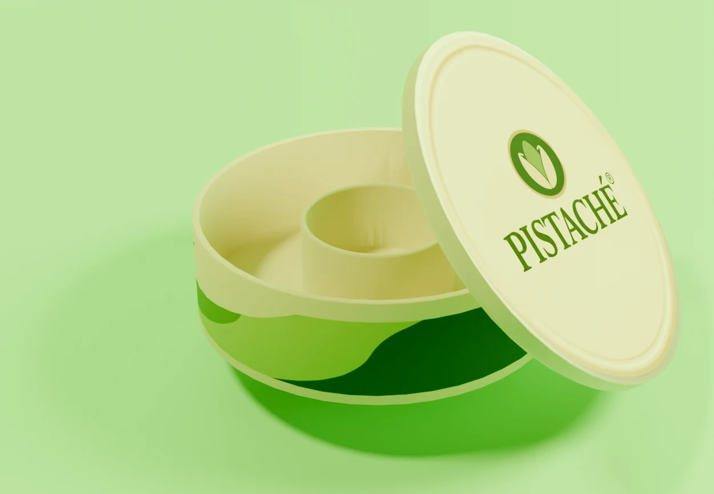
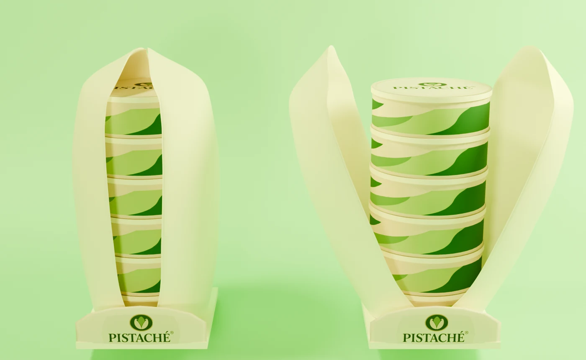
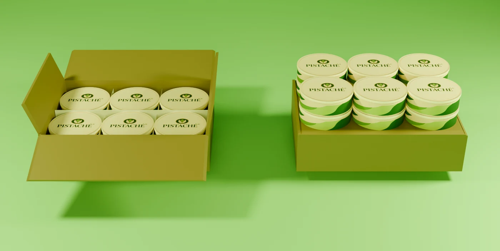

Abre.
Retira la tapa clara y accede al contenido del bowl.
El sabor de los pistachos merece una experiencia mejor. Un bowl con espacio para las cáscaras, una identidad natural y una segunda vida después del último bocado.

PISTACHÉ nace de una situación cotidiana: disfrutar pistachos y no tener dónde dejar sus cáscaras. Convertimos ese pequeño problema en una oportunidad de diseño.
El resultado es un sistema de packaging que busca unir comodidad, organización y reutilización, inspirado en la forma y los colores del propio fruto.
Un recipiente que facilita el consumo y mantiene las cáscaras separadas.
Tres niveles de envase para exhibir, agrupar y transportar el producto.
Un bowl diseñado para seguir siendo útil cuando se terminan los pistachos.
Un compartimiento interior transforma la manera de disfrutar tu snack favorito.
Retira la tapa clara y accede al contenido del bowl.
Coloca las cáscaras en el compartimiento central mientras disfrutas los pistachos.
Vacía, retira el material interior y usa el recipiente como organizador.
Diseño conceptual: la bolsa alimentaria interior se retira antes de usar el bowl como organizador.
Tres niveles conectados por una misma identidad. De la experiencia individual a la distribución.
Recipiente bajo con tapa crema, diseño verde y un depósito independiente para las cáscaras.

02 / SECUNDARIOUna torre vertical de seis bowls dentro de una estructura de cartón inspirada en el pistacho abierto.

03 / TERCIARIOCaja de cartón corrugado para doce primarios en dos niveles de seis, sin introducir los secundarios.
Las dimensiones y sistemas constructivos son propuestas de diseño académico. Su capacidad y resistencia se validarán mediante prototipos físicos.
Cuando el snack se termina, el recipiente puede seguir contigo. El compartimiento que antes recibía las cáscaras se convierte en un espacio para organizar tus objetos cotidianos.
Un packaging responsable también debe ser claro respecto a sus limitaciones y su funcionamiento real.
Se propone cartón compacto para el bowl, cartón reforzado para el secundario y corrugado para la caja de transporte.
El producto necesita una bolsa interior apta para alimentos y con barrera de conservación; la tapa del bowl no es un cierre hermético.
La bolsa debe poder retirarse antes de reutilizar el recipiente o gestionar sus componentes según los sistemas locales de reciclaje.
Para depositar las cáscaras mientras consumes los pistachos sin mezclarlas con la parte comestible.
El cartón convencional no es una barrera de conservación suficiente. El diseño contempla una bolsa interior alimentaria sellada y una superficie de consumo apta para contacto con alimentos.
No. PISTACHÉ es un proyecto académico de diseño tridimensional. Las imágenes muestran prototipos digitales y no una presentación comercial validada.
El contenido neto definitivo aún debe verificarse mediante una prueba de capacidad y pesaje del prototipo. La cantidad de una libra corresponde al producto comprado para la investigación, no a cada bowl.